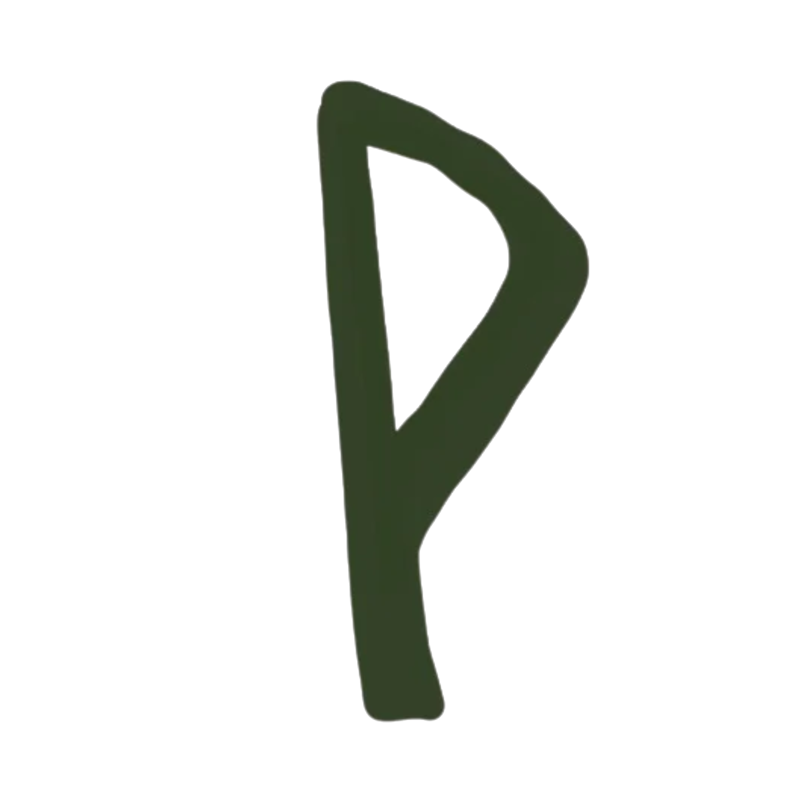
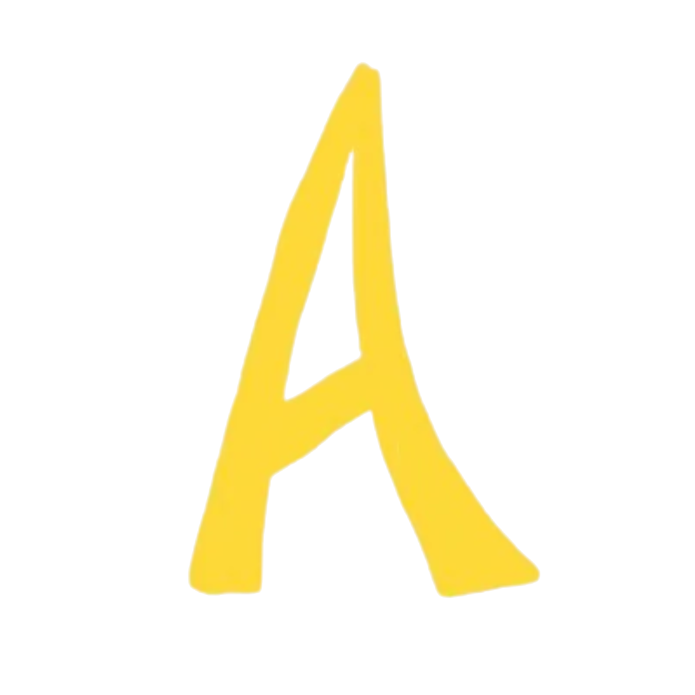
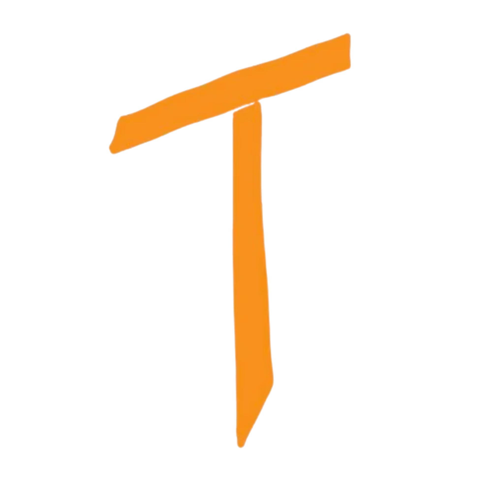
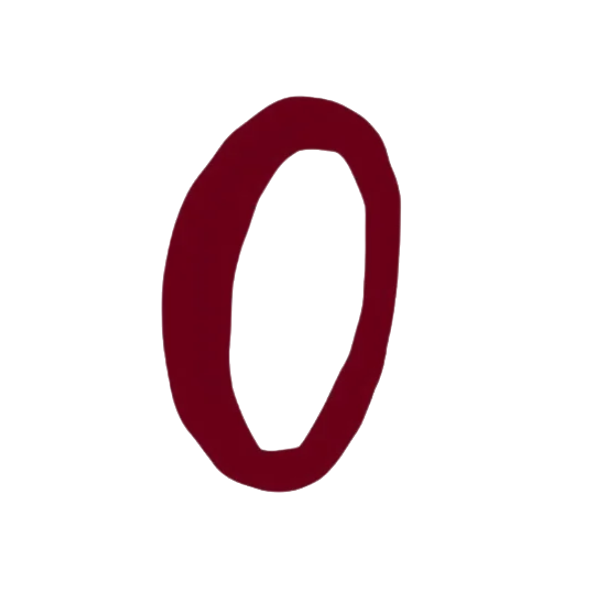
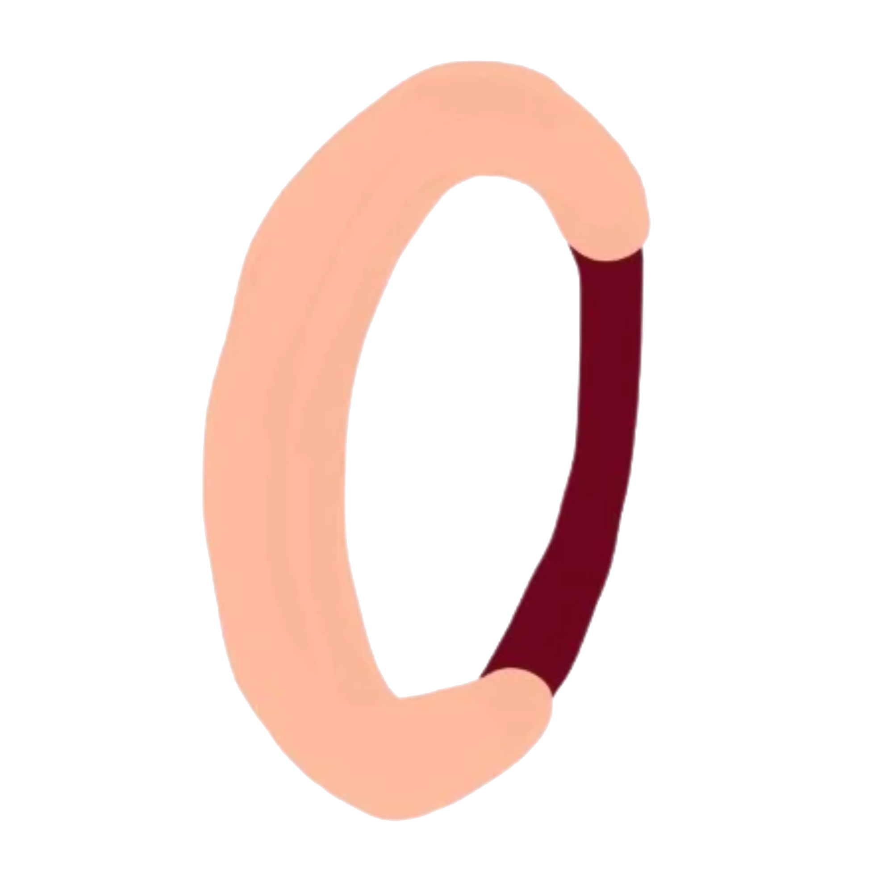

OS NOSSOS
PILARES.
Aqui vamos explicar porque escolhemos estes pilares e de que forma orientam tudo aquilo que fazemos no PATO.
O QUE NOS FAZ SER PATO?





P — Título do pilar
Texto de descrição do pilar P.
A — Título do pilar
Texto de descrição do pilar A.
T — Título do pilar
Texto de descrição do pilar T.
O — Título do pilar
Texto de descrição do pilar O.
C — Título do pilar
Texto de descrição do pilar C.